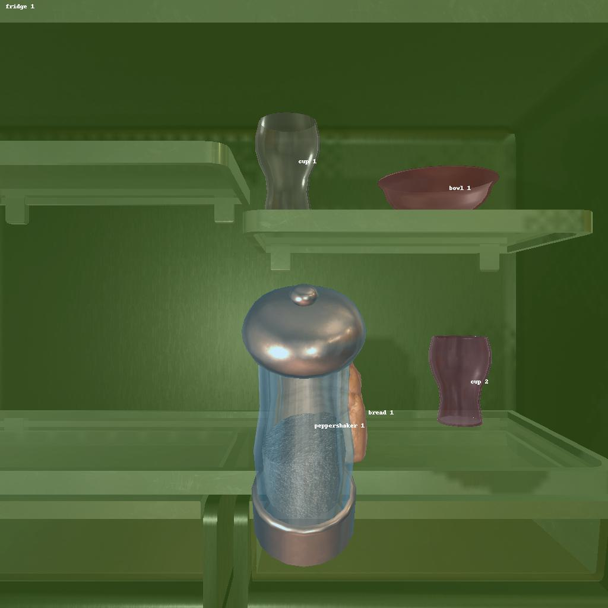

---------------------------------------------------------task: 20---------------------------------------------------------
--------------------------------------------------------------------------------------------------------------------------------------------------------------------
--------------------------------------------------------------------------------------------------------------------------------------------------------------------
Step:--------------------------------------------------------------------------11-------------------------------------------------------------------------------
----------------------------------------
VLM Prompt:
Image1:
Image2:
Image3:
**Instruction**
1. Analyze the provided image to identify all visible household objects, focusing on those relevant to the task description "put a hot apple in garbagecan."
2. Use the analysis of the image and the task hint "The agent must find an object of the desired type, pick it up, go to a microwave, heat the object with the microwave, then find the correct location to place it, and put it down there. The agent does not need to use the microwave button or open the microwave to heat the object, and the agent just needs to do action that is "heat the object with the microwave"." to answer the question: what is the most reasonable action in the choices for the task description "put a hot apple in garbagecan"?
4. Decide and write the answer using the template: The answer is: (i): , where i is the real number. If there is no desired object in the image, search every place based on **Initial Observation** to find the object. And if no one is exactly correct, choose a similar answer.
**Initial Observation**
You are in the middle of a room. Looking quickly around you, you can see cabinet (1-18), countertop (1-4), sink (1), drawer (1-7), sinkbasin (1), coffeemachine (1), microwave (1), garbagecan (1), stoveburner (1-4), toaster (1), fridge (1)
**Answer Choices**
(1): go to cabinet 1
(2): go to cabinet 2
(3): go to countertop 1
(4): go to cabinet 3
(5): go to cabinet 4
(6): go to cabinet 5
(7): go to sink 1
(8): go to cabinet 6
(9): go to drawer 1
(10): go to drawer 2
(11): go to sinkbasin 1
(12): go to cabinet 7
(13): go to cabinet 8
(14): go to coffeemachine 1
(15): go to microwave 1
(16): go to cabinet 9
(17): go to countertop 2
(18): go to cabinet 10
(19): go to drawer 3
(20): go to drawer 4
(21): go to garbagecan 1
(22): go to drawer 5
(23): go to cabinet 11
(24): go to cabinet 12
(25): go to cabinet 13
(26): go to cabinet 14
(27): go to stoveburner 1
(28): go to countertop 3
(29): go to stoveburner 2
(30): go to stoveburner 3
(31): go to stoveburner 4
(32): go to drawer 6
(33): go to cabinet 15
(34): go to cabinet 16
(35): go to cabinet 17
(36): go to cabinet 18
(37): go to toaster 1
(38): go to drawer 7
(39): go to countertop 4
(40): put peppershaker 1 in/on fridge 1
(41): cool peppershaker 1 with fridge 1
(42): examine peppershaker 1
(43): examine fridge 1
**Answer**
Let's think step by step by following the instructions.
----------------------------------------
----------------------------------------
Original Response:
The task is to "put a hot apple in garbagecan." The task hint indicates that the agent needs to find an apple, heat it using the microwave, and then place it in the garbagecan.
From the initial observation, we have the location of the microwave and garbagecan, but we need to find an apple first. None of the images provided show an apple, and the image analysis does not help in finding one. Therefore, we must search every place based on the initial observation to locate the apple.
The most reasonable action from the answer choices would be to start by searching the cabinets, as apples are typically stored in places like cabinets or countertops rather than drawers or appliances. We will start with cabinet 1 as it is the first in the sequence.
The answer is: (1): go to cabinet 1.
----------------------------------------
----------------------------------------
>>> Refine Original VLM Response and Get Pure Action: go to cabinet 1
----------------------------------------
-----------------------------------------------------------------
Running time: 8.634966611862183 seconds
Total Money: 12.865090000000004
-----------------------------------------------------------------
-----------------------------------------------------------------
Text Observation:You arrive at loc 0. The cabinet 1 is closed.
-----------------------------------------------------------------
UNSUCCEED